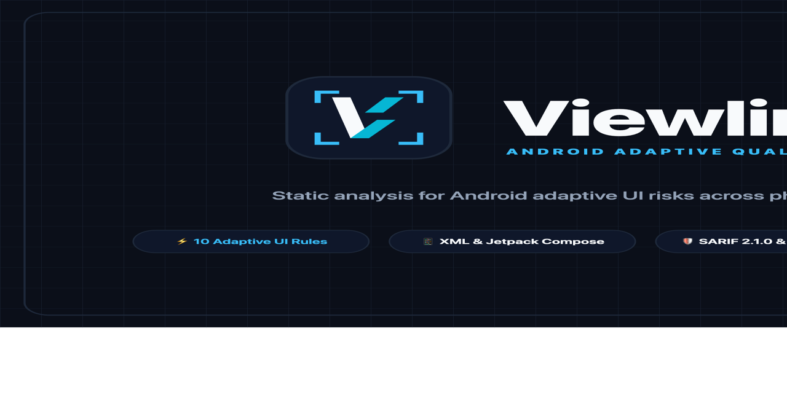

Viewlint — Brand Identity Redesign (Adaptive Viewport Monogram)
Complete ground-up logo identity, technical symbolism, and quality verification sheet.
1. Primary Logo Variants
Dark Theme Lockup (`viewlint-logo-dark.svg`)
Light Theme Lockup (`viewlint-logo-light.svg`)
Monochrome Vector Lockup (`viewlint-logo-mono.svg`)
2. Symbol Legibility at Small Scale (16px, 32px, 64px, 128px)
SVG Symbol Scaling Test
Raster PNG Avatar Scaling Test
3. Open Graph Repository Social Preview (1280×640)
